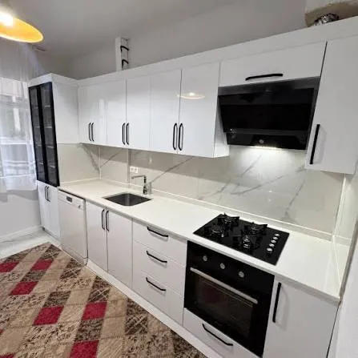
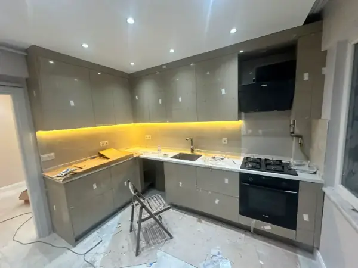

Ümraniye Matplus Mutfak Dolabı İmalatı.
Anti-fingerprint (parmak izi bırakmayan) ipeksi mat nano yüzey teknolojisi. Dokunulduğunda kadifemsi sıcaklık, ışığı yansıtmayan dingil mimari derinlik ve mikro çizilmelere karşı üstün direnç. Üreticiden aracısız en avantajlı atölye fiyatları.
0 İz
Parmak İzi Tutmaz
18 mm
Nem Dayanımlı MDF
5 Yıl
Resmi Garanti

Matplus Kapak Teknolojisinin Farkı Nedir?
Geleneksel mat kaplamaların kronik parmak izi problemine son veren nanoteknolojik mühendislik.
Mükemmel Işık Emilimi ve Kadife Doku
Gün ışığı alan mutfaklarda sıradan parlak veya yarı-mat kapaklar rahatsız edici yansımalar ve dalgalanmalar yaratabilir. Matplus yüzeyler ise ışığı kırarak tamamen emer; mutfağınız günün her saatinde dingin, asil ve lüks bir galeri estetiği sunar.
Kulpsuz Minimalizm: Matplus kapaklar özellikle entegre Gola profilli veya bas-aç kulpsuz tasarımlarla harika bir ikili oluşturur. Kulpsuz dolaplarda kapak yüzeyine sürekli elle dokunulduğu için leke tutmazlık özelliği bu mutfaklarda vazgeçilmez bir konfordur.
Teknik Standartlarımız:
- ✓ Gövde: 18 mm neme dayanıklı MDFlam
- ✓ Kapak: Anti-fingerprint nano mat yüzeyli 18 mm MDF levha
- ✓ Kenar Bantlama: Lazer teknolojili PUR tutkallı sıfır ek yeri
- ✓ Donanım: Blum Aventos kalkar kapaklar ve Tandembox çekmeceler

Popüler Matplus Renkleri
Mimarların ve ev sahiplerinin en çok tercih ettiği sofistike mat tonlar.
Matplus Mutfak Dolabı Modelleri, Leke Tutmaz Teknoloji ve 2026 Fiyatları
Matplus kapak teknolojisi, iç mimaride yeni bir çağ açan nanoteknolojik elektron ışını (Electron Beam Curing - EBC) ile sertleştirilmiş ultra mat yüzey kaplamasıdır. Parmak izi bırakmayan (anti-fingerprint), ışığı yansıtmayan derin mat dokusu ve kadifemsi ipeksi dokunuş hissiyle modern lüks mutfakların vazgeçilmez standardıdır. Mutfak Dolabınız, Ümraniye tesisinde en yeni nesil Matplus panelleri milimetrik hassasiyetle işleyerek rezidans ve villa projelerine kazandırmaktadır.
📊 2026 Matplus Mutfak Dolabı Teknik & Fiyat Karşılaştırma Matrisi
| Teknik Parametre | Mutfak Dolabınız İmalat Standardı | Kullanıcı Avantajı & Garanti |
|---|---|---|
| Yüzey Teknolojisi | EBC Elektron Işını ile Sertleştirilmiş Nano-Mat Polimer | Sıfır parmak izi, ışığı yansıtmayan derin kadife mat doku |
| Gövde Malzemesi | 18 mm E1 Neme Dayanıklı MDF-Lam (Kastamonu / Egger) | Koku ve nem tutmaz, vidalama mukavemeti en üst seviyede |
| Kenar Bantlama | 1 mm Lazer Uyumlu ABS + Su Geçirmez PUR Tutkal | Sıcak buhardan ve sudan asla etkilenmeyen sıfır derz yapısı |
| Mekanizma & Ray | Blum Aventos Kalkar Kapaklar & Blum Tandembox Raylar | Kulpsuz bas-aç (tip-on) ve frenli yumuşak kapanma donanımı |
| 2026 Metretül Fiyatı | ₺12.500 - ₺13.800 / Metretül (Üst-Alt Dolap Dahil) | Doğrudan Ümraniye atölye imalat fiyatı, bayi karı eklenmez |
| Teslimat & Montaj | 12-14 İş Günü İmalat · 1 Günde Anahtar Teslim Montaj | İstanbul geneli ücretsiz yerinde lazer keşif ve 5 yıl garanti |
📐 Nanoteknolojik Elektron Işını Kürleme ve Sıfır Parmak İzi
Geleneksel mat kapaklarda en büyük sorun olan parmak izi, el yağı ve su lekeleri Matplus teknolojisinde tarihe karışır. Elektron ışınıyla sertleştirilen mikroskobik yüzey yapısı, yağ ve nem moleküllerinin tutunmasını engeller. Çizilmelere karşı termal mikro-iyileşme özelliği sayesinde hafif yüzey sürtünmelerinde dahi mikrofiber bezle kolayca eski haline döner. Yoğun mutfak trafiğine sahip modern aileler için leke tutmazlıkta zirve çözümdür.
🎨 Kulpsuz J-Profil Tasarım ve Sofistike Renk Kombinasyonları
Matplus mutfak dolaplarında en popüler tasarım dili, kulpsuz J-profil gizli alüminyum kulp profilleridir. Mat antrasit, volkan grisi, kaşmir, duman grisi ve tebeşir beyazı renkleri, salonla birleşen Amerikan ada mutfaklarda büyüleyici bir zarafet sunar. Tezgah seçiminde Calacatta porselen veya kuvars kompozit tezgahlarla birleştiğinde kesintisiz monolitik bir mimari çizgi oluşturur ve mekanın değerini katlar.
🛡️ 18mm Neme Dayanıklı MDF Gövde ve Blum Aventos Donanımları
Dolap gövdelerimizde kullanılan 18 mm E1 neme dayanıklı MDF paneller, kenarlarında PUR tutkallı lazer kenar bantlama ile sudan ve pişirme buharından tamamen yalıtılır. Üst dolaplarda kullanılan Blum Aventos HF çift kanatlı katlanır kalkar kapak mekanizmaları, yemek hazırlığı sırasında baş çarpma riskini sıfıra indirir ve mutfakta maksimum hareket özgürlüğü sağlar.
🏭 2026 Matplus Metretül Maliyetleri ve İstanbul Geneli Keşif
Matplus mutfak dolabı metretül fiyatlarımız, aracı mağaza payı olmadan doğrudan atölye imalat avantajıyla sunulmaktadır. İstanbul Anadolu ve Avrupa yakasında adresinize lazerli ölçüm aletlerimiz ve gerçek folyo kartelalarımızla gelerek ücretsiz keşif yapıyoruz. 3D mimari simülasyonun ardından 12-14 iş gününde imalatı tamamlayıp 1 günde anahtar teslim monte ediyoruz.
Atölyemizde Matplus Mutfak Dolabı İmalat Süreci
E1 sertifikalı suya dayanıklı MDF gövdeler ve hassas işçilikle hazırlanan özel mutfak dolaplarımızın atölye üretim anları.


Matplus Mutfak Sıkça Sorulan Sorular
Matplus Mutfak Dolabınız İçin Doğrudan Fabrika Fiyatı Alın
Mutfak planınızı veya fotoğrafınızı WhatsApp üzerinden gönderin, iç mimarımız ihtiyaçlarınıza göre en uygun metretül fiyatını anında hesaplasın.